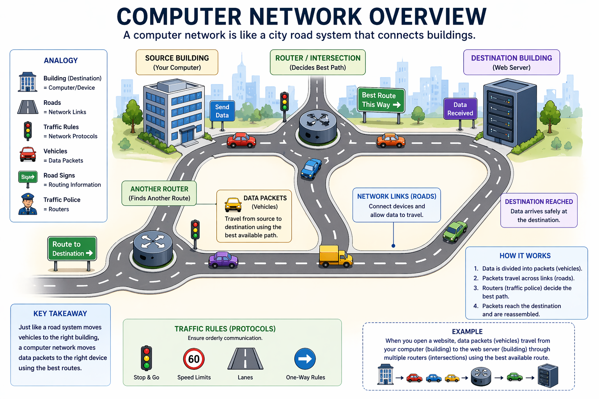

M1
Introduction to Computer Networks
Introduction
Welcome to Module 1: Introduction to Computer Networks. This is the first and most important module in your networking journey. Before you can understand cybersecurity, ethical hacking, or any advanced networking topic, you need a very solid foundation and that starts here.
In this module, you will learn what a computer network actually is, why it was invented, how data travels from one machine to another, and all the different types and shapes of networks you encounter every single day even without realizing it.
Think of a computer network like a road system in a city. Roads connect buildings (computers). Vehicles carry passengers and goods (data). Traffic rules keep things orderly (protocols). Just as roads allow a city to function, networks allow computers to communicate and share resources.
Why is this important for Cybersecurity?
- Every attack travels over a network. Hackers exploit networks to gain unauthorized access to systems.
- You cannot defend what you do not understand. A cybersecurity professional must deeply understand how data moves across networks.
- Tools like Wireshark, Nmap, and Metasploit all operate at the network level. You will use them later in this course.
- Certifications like CompTIA Security+, CEH, and OSCP all test networking fundamentals heavily.
What is a Computer Network?
A Computer Network is a collection of two or more computing devices called nodes that are connected together through communication links so they can share data, resources, and services with each other.
Formula:
Network = Nodes + Communication Links + Rules (Protocols)A computer network is a set of nodes connected by communication links. The link carries information from one node to another.
{kind=link}

What are Nodes?
A node is any device that can send, receive, or process data on a network. If a device can send data or receive data or both, we can call that device a node.
Examples of Nodes:
| Type | Description |
|---|---|
| Computers and Laptops | The most common nodes that users interact with directly |
| Servers | Machines that provide services like websites, email, and file storage |
| Routers and Switches | Devices that direct and manage the flow of data across a network |
| Smartphones and Tablets | Mobile devices that connect to networks via Wi Fi or cellular |
| IoT Devices | Smart TVs, cameras, thermostats. Anything connected to the internet |
| Printers and Scanners | Peripheral devices shared over a network by multiple users |
| Security Cameras | Surveillance devices connected to the network |

What are Communication Links?
Communication links are the pathways through which data travels between nodes. A communication link can be a wired link or a wireless link. The important point to note about a link is that this link only carries the information.
Types of Links:
- Wired Links: Physical cables like Ethernet (twisted pair), Fiber optic, Coaxial cable
- Wireless Links: Radio waves (Wi Fi), Infrared, Bluetooth, Satellite, Cellular (4G/5G)

Purpose of a Computer Network
A computer network is mainly used for resource sharing. Networks save a lot of infrastructure cost.
| Purpose | Description |
|---|---|
| Resource Sharing | Multiple users can share one printer, one internet connection, or one storage server. Saving cost and increasing efficiency |
| Communication | Email, video calls, instant messaging. All made possible because computers are connected via networks |
| Centralized Management | Administrators can manage all computers from one place. Pushing updates, monitoring activity, enforcing policies |
| Data Storage and Backup | Centralized servers hold and back up data for all users on the network automatically |
| Cost Efficiency | Reduce operational and infrastructure costs through shared resources and centralized systems |
| Reliability and Availability | Improve system reliability using backup paths and fault tolerant mechanisms |
| Scalability and Growth | Support easy expansion by adding new devices and services as demand increases |
| Security and Control | Protect data and network resources using authentication, access control, and monitoring |

Basic Characteristics of a Network
A good computer network does not just connect devices. It must have specific qualities to be truly useful and reliable. There are four basic characteristics any computer network should possess: Fault tolerance, Scalability, Quality of Service (QoS), and Security.
Fault Tolerance
What it means: The network should continue working even when one or more parts of it fail. Fault tolerance is the ability of the computer network to continue working despite failures and it should ensure there is no loss of service.
Imagine a city road system. If one road is blocked, cars re route through another road and still reach the destination. A fault tolerant network does exactly this. Data finds another path when one route is broken.
- Achieved by having redundant (backup) paths between devices
- If a switch or router fails, traffic automatically reroutes through another device
- Protocols like Spanning Tree Protocol (STP) and OSPF help implement this

Example:
Suppose two entities are communicating through a path. If there is a failure in a link or a router goes down, the router forwards the data through an alternative path so that communication is not affected.
Scalability
What it means: The network should be able to grow in size. Adding more devices and users without losing performance or requiring a complete redesign. It is the ability to grow based on the needs and have good performance even after growth.

- A school network that starts with 50 computers must be able to grow to 500 without replacing all equipment
- Cloud services like AWS and Google Cloud are prime examples of highly scalable networks
- Poor scalability leads to bottlenecks. Points where the network slows down under load
- The Internet is the best example of a scalable network. Even at this moment, many new devices are connecting to the internet and communicating with each other. The Internet handles this perfectly and always gives scope for newcomers
Quality of Service (QoS)
What it means: The ability of the network to prioritize certain types of traffic to ensure smooth performance for critical applications. It is the ability to set priorities and manage data traffic to reduce data loss and delays.
- A video call requires very low delay (latency). QoS can prioritize video packets over regular downloads
- Without QoS, all traffic is treated equally. Your video call may freeze while someone downloads a large file
- QoS mechanisms include traffic shaping, prioritization queues, and bandwidth reservation

Example:
Consider a router receiving email traffic and voice traffic (real time communication) simultaneously. The router will process voice over IP phone data first because it is real time communication. In real time communication, delays are not accepted, whereas a delay of one second in email communication does not hurt the communication. The router gives priority to real time communication over normal communication.
Security (CIA Triad)
What it means: The ability to prevent unauthorized access, misuse, or forgery. Network security is built around three principles known as the CIA Triad.
| Principle | Description | Implementation |
|---|---|---|
| Confidentiality | Only authorized people can read the data | Encryption (HTTPS, VPN) |
| Integrity | Data must not be altered during transmission | Checksums and hash functions (SHA 256) |
| Availability | Network resources must be accessible when needed | Protection against DDoS attacks and hardware failure |
Cybersecurity Connection:
The CIA Triad is the backbone of every cybersecurity framework. When you hear about a data breach, ransomware, or DDoS attack. Each one violates at least one part of the CIA Triad.

Data Communication Fundamentals
Bits and Bytes: The Language of Computers
Computers and networks only work with binary digits, zeros and ones. Each bit can only have one of two possible values, 0 or 1. The term bit is an abbreviation of "binary digit" and represents the smallest piece of data. Humans interpret words and pictures, computers interpret only patterns of bits.
All data. Photos, videos, text messages, passwords. Is stored and transmitted as binary numbers (zeros and ones). Every input device (mouse, keyboard, voice activated receiver) translates human interaction into binary code. Every output device (printer, speakers, monitors) takes binary data and translates it back into human recognizable form.
| Unit | Size | Example |
|---|---|---|
| 1 Bit | Smallest unit. 0 or 1 | On/Off signal |
| 1 Byte | 8 bits | One character like 'A' |
| 1 Kilobyte (KB) | 1,024 Bytes | A short text message |
| 1 Megabyte (MB) | 1,024 KB | A small photo |
| 1 Gigabyte (GB) | 1,024 MB | A full HD movie |
| 1 Terabyte (TB) | 1,024 GB | Thousands of movies |
ASCII Code Example:
Computers use binary codes to represent and interpret letters, numbers and special characters. A commonly used code is the American Standard Code for Information Interchange (ASCII). With ASCII, each character is represented by eight bits.
- Capital letter: A = 01000001
- Number: 9 = 00111001
- Special character: # = 00100011
Analog vs. Digital Signals
Analog Signals
Continuous waves that vary smoothly over time. Like a human voice or radio waves. Susceptible to noise and interference. Old telephone systems used analog. All real life signals are analog in nature. The colors we see, the heat or temperature we feel, the sounds we produce or hear. All these signals are analog in nature.
Digital Signals
Discrete values. Only 0s and 1s. Less affected by noise. Easier to store and process. Used in all modern computer networks and the Internet.
Analogy:
Analog is like a dimmer light switch. It can be at any brightness level between off and fully on. Digital is like a regular on/off switch. It is either fully OFF (0) or fully ON (1). Computers prefer digital because it is clear and unambiguous.

Transmission Methods
Data must be converted into signals that can be sent across the network media to its destination. Media refers to the physical medium on which the signals are transmitted. There are three common methods of signal transmission used in networks:
| Method | Description | Advantages | Disadvantages |
|---|---|---|---|
| Electrical (Copper Cables) | Data travels as electrical pulses through copper wire. Used in Ethernet cables | Cheap, easy to install | Limited distance (up to 100m) and speed, affected by EMI/RFI |
| Light (Fiber Optic) | Data travels as pulses of light through glass or plastic fibers | Extremely fast, long distances (up to 100,000m), immune to electromagnetic interference | Expensive, requires special installation skills |
| Wireless (Radio Waves) | Data travels as electromagnetic radio waves through the air. Used in Wi Fi, Bluetooth, 4G/5G, satellite | Convenient, mobility | Affected by walls, interference, and distance, security concerns |

Bandwidth vs. Throughput
| Concept | Definition | Analogy | Measured In |
|---|---|---|---|
| Bandwidth | Maximum possible data rate a connection can carry (theoretical max) | Width of a highway. How many cars CAN travel | Mbps, Gbps |
| Throughput | Actual data rate achieved in practice (real speed) | Actual cars traveling right now. Affected by traffic jams | Mbps, Gbps |

Important Note:
Your ISP says "100 Mbps bandwidth" but you often get 60 to 80 Mbps throughput. The difference is due to network congestion, protocol overhead, and hardware limitations. This gap between bandwidth and throughput is real and measurable.
Many factors influence throughput including:
- The amount of data being sent and received over the connection
- The types of data being transmitted
- The latency created by the number of network devices encountered between source and destination
In an internetwork or network with multiple segments, throughput cannot be faster than the slowest link of the path from sending device to the receiving device. Even if all or most of the segments have high bandwidth, it will only take one segment in the path with lower bandwidth to create a slowdown of the throughput of the entire network.
Latency
Latency is the time it takes for a data packet to travel from the source to the destination. Also called "ping" or delay. It refers to the amount of time, including delays, for data to travel from one given point to another.
- Measured in milliseconds (ms)
- Low latency = fast response (good for gaming and video calls. Ideally less than 50ms)
- High latency = slow response (bad user experience. 200ms+ feels sluggish)
- Causes of high latency: long physical distance, many router hops, network congestion

Terminal: Measuring Latency
$ ping google.com
PING google.com (142.250.80.46): 56 data bytes
64 bytes from 142.250.80.46: icmp_seq=0 ttl=117 time=12.4 ms
64 bytes from 142.250.80.46: icmp_seq=1 ttl=117 time=11.9 ms
64 bytes from 142.250.80.46: icmp_seq=2 ttl=117 time=12.1 ms
# 'time=12.4 ms' this is the latency (round trip time)
# Lower = faster = better network responseData Flow Modes
When two devices communicate, the flow of data can happen in different ways. There are three modes of data flow: Simplex, Half Duplex, and Full Duplex.
Simplex
Data flows in only ONE direction. From sender to receiver. The receiver can never send back. It is always a unidirectional communication.

Real Examples:
- Keyboard to Computer (keyboard only sends, never receives)
- TV Broadcast (station sends, your TV only receives)
- Baby Monitor (one way audio transmission)
- Traditional monitors (not touch monitors)
Half Duplex
Data flows in both directions, but NOT at the same time. Only one device can transmit at a time. You must wait for the other to finish before you respond.

Real Examples:
- Walkie Talkie: "Over and out". You press to talk, release to listen. Both directions, but never simultaneously.
- Old Ethernet hubs and early wireless networks.
Full Duplex
Data flows in both directions SIMULTANEOUSLY. Both devices can send and receive at the same time. The most efficient mode.

Real Examples:
- Phone Call / Video Call: Both people can talk and listen at the same time.
- Modern Ethernet switches, mobile phones, modern Wi Fi networks.
- Telephone Line.
Final Comparison: Simplex vs Half Duplex vs Full Duplex
| Mode | Direction | Simultaneous? | Example |
|---|---|---|---|
| Simplex | One way only | No | Keyboard, TV Broadcast, Traditional Monitor |
| Half Duplex | Both ways, one at a time | No | Walkie Talkie, Old Ethernet |
| Full Duplex | Both ways, at the same time | Yes | Phone Call, Modern Ethernet, Telephone Line |

Types of Communication
When a device sends data on a network, it can address that data in different ways. To one specific device, to a group, or to everyone. These are called communication types.
Unicast
One to One communication. Data is sent from one source to exactly one destination. Most network traffic is unicast. A unicast packet has a destination IP address that is a unicast address which goes to a single recipient. A source IP address can only be a unicast address, because the packet can only originate from a single source.

Example:
Visiting a website. Your computer requests data from ONE server, and that server responds to only YOUR computer.
IPv4 unicast host addresses are in the address range: 1.1.1.1 to 223.255.255.255. However, within this range are many addresses that are reserved for special purposes.
Multicast
One to Many (selective) communication. Data is sent to a specific GROUP of devices that have subscribed to receive it. Multicast transmission reduces traffic by allowing a host to send a single packet to a selected set of hosts that subscribe to a multicast group.

Example:
Live video streaming. The streaming server sends one stream to all viewers who have joined. Video conferencing, IPTV. Each multicast group is represented by a single IPv4 multicast destination address. When an IPv4 host subscribes to a multicast group, the host processes packets addressed to this multicast address, and packets addressed to its uniquely allocated unicast address.
IPv4 multicast address range: 224.0.0.0 to 239.255.255.255.
Broadcast
One to All communication. Data is sent to ALL devices on the network simultaneously. Broadcast transmission refers to a device sending a message to all the devices on a network in one to all communications.

Example:
When your router assigns IP addresses using DHCP. It broadcasts to ask "Who needs an IP?" All devices hear it, only the right one responds. A broadcast packet has a destination IP address with all ones (1s) in the host portion, or 32 one (1) bits.
Cybersecurity Note:
Attackers exploit broadcast traffic in attacks like ARP spoofing and DHCP starvation. Understanding these communication types helps you identify and defend against such attacks.
Types of Broadcast:
- Directed broadcast: Sent to all hosts on a specific network. Example: 172.16.4.255
- Limited broadcast: Sent to 255.255.255.255. By default, routers do not forward broadcasts.
Note: IPv4 uses broadcast packets. However, there are no broadcast packets with IPv6. IPv6 replaces broadcast with multicast.
Final Comparison: Unicast vs Multicast vs Broadcast
| Type | Sender | Receivers | IP Address Example |
|---|---|---|---|
| Unicast | 1 device | 1 specific device | 192.168.1.10 |
| Multicast | 1 device | Subscribed group | 224.0.0.1 (multicast range) |
| Broadcast | 1 device | All devices on subnet | 192.168.1.255 |

Network Architectures
Network architecture defines how computers are organized and how they interact with each other. The two fundamental models are Client Server and Peer to Peer (P2P).
Client Server Model
In this model, there is a clear division of roles: Servers provide services, and Clients request those services. It is also called a request response model.
- The server is a powerful, dedicated machine that runs services 24/7 (web server, database, email server)
- The client is any device (laptop, phone, PC) that sends requests to the server
- All communication goes through the server. Clients do not communicate directly with each other
- The client server model works on a request response flow where a client requests a service/data and the server processes that request and returns a response

Real Example:
You open google.com in your browser. Your browser is the CLIENT. It sends a request. Google's server is the SERVER. It processes your request and sends back the webpage. This is client server in action.
| Advantages | Disadvantages |
|---|---|
| Centralized management | If the server goes down, all clients lose access |
| Better security | Server hardware is expensive |
| Easier to back up | Can become a bottleneck when many clients send requests simultaneously |
| Scalable | Requires network connectivity |
| Supports multiple clients simultaneously | Complex to scale properly (load balancing, replication, backups needed) |
Types of Client Server Architecture:
- 2 Tier Architecture: Client communicates directly with the server, which handles both processing and data storage. Suitable for small applications and limited users.
- 3 Tier Architecture: Divided into presentation layer (client), application layer (business logic), and data layer (database server). The client interacts with the application server instead of communicating directly with the database. Widely used in web applications and enterprise systems.
Peer to Peer (P2P) Model
In P2P, every device acts as BOTH a client AND a server. There is no central authority. Peers connect directly to each other. In a P2P system, every node has an equal role to play and the same functionalities, which means that the loads are well shared.
- Each peer can share files, resources, or services directly with other peers
- No single point of failure. If one peer goes offline, others continue
- Harder to secure and manage than client server
- All nodes are with equal rights. There is nobody superior and there is nobody inferior
- There is no centralized administration

Real Examples:
- BitTorrent: Each user downloading also uploads to others
- Blockchain/Bitcoin: All nodes store and validate transactions
- Small home networks: Two computers sharing files directly
- Napster, Gnutella, eDonkey, Kazaa, Skype
| Advantages | Disadvantages |
|---|---|
| Easy to set up | No centralized administration |
| Less complex | Not as secure |
| Lower cost (no dedicated servers needed) | Not scalable |
| Can be used for simple tasks (transferring files, sharing printers) | All devices may act as both clients and servers which can slow their performance |
| Easy to add and remove nodes | Data is vulnerable because of no central server and backup |
| Less network traffic than client server | Files hard to locate (not centrally stored) |
Types of P2P Networks:
- Unstructured P2P Networks: Each device makes an equal contribution. Easy to build but difficult to find content. Examples: Napster, Gnutella.
- Structured P2P Networks: Designed using software that creates a virtual layer to put nodes in a specific structure. Not easy to set up but gives easy access to content. Examples: P Grid, Kademlia.
- Hybrid P2P Networks: Combines features of both P2P networks and client server architecture. Uses a central server to find a node.
Final Comparison: Client Server vs Peer to Peer
| Feature | Client Server | Peer to Peer |
|---|---|---|
| Control | Centralized (server) | Decentralized (no center) |
| Security | Easier to secure | Harder to secure |
| Scalability | Scales with server upgrades | Scales naturally as peers join |
| Cost | High (dedicated servers needed) | Low (use existing hardware) |
| Used In | Websites, enterprise networks, email | BitTorrent, Blockchain, gaming, small home networks |

Network Types by Scale
Networks are categorized by their physical size and geographic coverage. The smaller the area, the faster and more controlled the network typically is.
PAN: Personal Area Network
A Personal Area Network is the smallest type of network, designed to connect devices within the immediate vicinity of an individual person. Think of it as your personal device ecosystem operating within arm's reach.

| Characteristic | Description |
|---|---|
| Range | A few centimeters to approximately 10 meters (around one person) |
| Technology | Bluetooth (IEEE 802.15.1), USB, NFC (Near Field Communication), Infrared (IrDA), Zigbee, Z Wave |
| Speed | Bluetooth 5.0: Up to 2 Mbps; Bluetooth Low Energy: Up to 1 Mbps; NFC: Up to 424 Kbps; USB 3.0: Up to 5 Gbps |
| Topology | Usually star or point to point |
| Examples | Connecting AirPods to your phone, smartwatch to phone, wireless keyboard to laptop, fitness tracker syncing, contactless payments, wireless mouse |
| Managed by | The individual user |
| Key Protocols | Bluetooth protocols (L2CAP, RFCOMM), OBEX (Object Exchange), HID (Human Interface Device) |
Advantages and Limitations of PAN
| Advantages | Limitations |
|---|---|
| Extremely low power consumption (especially BLE) | Very limited range |
| Simple to set up and use | Low data rates compared to LAN/WAN |
| Low cost or no additional hardware required | Susceptible to interference in crowded 2.4 GHz band |
| Enables personal device ecosystem | Security concerns with wireless technologies |
| Automatic device discovery and pairing | Limited number of simultaneous connections |
LAN: Local Area Network
A Local Area Network connects computers and devices within a limited geographical area, typically a single building, floor, or small campus. LANs form the foundation of most organizational and home networks.

| Characteristic | Description |
|---|---|
| Range | Single building or campus. Up to approximately 1 km (can be extended with repeaters or fiber) |
| Technology | Ethernet (IEEE 802.3), Wi Fi (IEEE 802.11), Token Ring (legacy), FDDI (legacy) |
| Speed | Very high. 100 Mbps (Fast Ethernet) to 10 Gbps (10 Gigabit Ethernet), with 25/40/100 Gbps in data centers |
| Examples | Home network, office network, school computer lab, coffee shop Wi Fi |
| Key Devices | Switch, Router, Access Point, Network Interface Card (NIC), Hub (legacy), Bridge (legacy) |
| Ownership | Private (owned and managed by the organization or individual) |
| Topology | Star (most common), Bus (legacy), Ring (legacy), Mesh (data centers) |
Types of LAN:
- Wired LAN: Uses Ethernet cables (straight through or crossover)
- Wireless LAN (WLAN): Uses Wi Fi technology
CAN: Campus Area Network
A Campus Area Network connects multiple LANs within a defined geographical area, typically a university campus, corporate headquarters, hospital complex, or military base. CANs bridge the gap between LAN and MAN.

| Characteristic | Description |
|---|---|
| Range | Multiple buildings on the same campus. Up to a few kilometers (typically 1 5 km) |
| Technology | Ethernet (fiber backbone), Fiber Optics (single mode and multi mode), 10 Gigabit Ethernet, Wi Fi (outdoor mesh) |
| Speed | Up to 1 Gbps to 100 Gbps on backbone links |
| Examples | University campus network connecting academic buildings, dormitories, libraries, and administrative offices; corporate campus connecting multiple office buildings; hospital network connecting main hospital, clinics, and research facilities |
| Key Devices | Core switches, distribution switches, routers, fiber optic transceivers, wireless bridges |
| Ownership | Single organization (university, corporation) |
| Topology | Hierarchical (core, distribution, access), often with redundant fiber rings |
MAN: Metropolitan Area Network
A Metropolitan Area Network spans a city or large urban area, connecting multiple LANs and CANs across distances up to approximately 50 kilometers. MANs are typically operated by telecommunications companies, ISPs, or large enterprises with multiple city locations.

| Characteristic | Description |
|---|---|
| Range | A city or large urban area. Up to approximately 50 km |
| Technology | Fiber optic cables (SONET/SDH, DWDM), Metro Ethernet, MPLS, Microwave links, Free Space Optics (FSO) |
| Speed | Up to 10 Gbps to 100 Gbps (with DWDM reaching multiple Tbps) |
| Examples | City wide Wi Fi networks, cable TV networks, a bank's network connecting all branches in a city, municipal government networks, ISP metro networks |
| Key Devices | Metro switches, optical transport equipment, DWDM multiplexers, edge routers |
| Ownership | Typically operated by telecom companies, ISPs, cable providers, or city governments |
| Topology | Ring (most common for redundancy), Mesh, Point to Point |
WAN: Wide Area Network
A Wide Area Network spans large geographical areas, connecting networks across countries, continents, and the globe. WANs form the backbone of global communications and the Internet itself.

| Characteristic | Description |
|---|---|
| Range | Countries and continents. Unlimited global coverage |
| Technology | Leased lines (T1/E1, T3/E3), MPLS, Frame Relay (legacy), ATM (legacy), Satellite (GEO, MEO, LEO), Submarine fiber optic cables, SD WAN |
| Speed | Varies widely from Kbps (satellite backup) to multiple Tbps (submarine cables). Slower than LAN due to distance and multiple hops |
| Examples | The Internet (world's largest WAN), multinational company's global network connecting offices worldwide, ATM networks, ISP backbone networks |
| Key Devices | Core routers, edge routers, optical transport equipment, satellite ground stations, SD WAN edge devices |
| Ownership | ISPs, telecommunications carriers, consortiums (for submarine cables) |
| Topology | Mesh, Hierarchical, Ring, Hybrid |
Final Comparison : PAN vs LAN vs CAN vs MAN vs WAN
| Feature | LAN | CAN | MAN | WAN |
|---|---|---|---|---|
| Scope | Building | Campus | City | Global |
| Distance | <1 km | 1 5 km | 5 50 km | Unlimited |
| Speed | 100 Mbps 100 Gbps | 1 100 Gbps | 100 Mbps 100 Gbps | Varies widely |
| Latency | <1 ms | 1 5 ms | 5 20 ms | 20 500+ ms |
| Owner | Organization | Organization | ISP/Telecom | Multiple ISPs/Carriers |
| Primary Tech | Ethernet, Wi Fi | Fiber Ethernet | SONET/DWDM, Metro Ethernet | MPLS, Submarine Fiber, Satellite |
| Cost | Low per port | Medium | High | Highest (per Mbps) |
| Redundancy | Optional | Common | Standard | Multiple layers |
| Security Control | Full | Full | Limited (carrier managed) | Minimal (public internet) |

Internet, Intranet, and Extranet
These three terms are often confused. They all describe networks, but with very different levels of access and purpose.
Internet
The global public network that connects billions of devices worldwide. Anyone in the world can access public websites and services. Uses IP protocols. You are using the Internet right now to view this page.
The internet is not owned by any individual or group. The internet is a worldwide collection of interconnected networks (internetwork or internet for short), cooperating with each other to exchange information using common standards. Through telephone wires, fiber optic cables, wireless transmissions, and satellite links, internet users can exchange information in a variety of forms.

Intranet
A private, internal network used within an organization. Uses the same web technologies (HTTP, HTML) as the Internet but is only accessible to employees.
| Feature | Description |
|---|---|
| Ownership | Owned and controlled by a single organization |
| Access | Restricted using login credentials |
| Purpose | Internal communication and collaboration |
| Uses | Employee portals, internal emails and messaging, sharing company policies and documents, internal applications (HR, payroll, project management) |
| Examples | Corporate internal website, university campus portal, government department internal systems |

Extranet
An extension of the Intranet that is partially accessible to authorized outsiders. Like partners, suppliers, or customers. More restricted than Internet, less restricted than Intranet.

| Feature | Description |
|---|---|
| Access | Provided to partners, vendors, suppliers, or customers |
| Security | Requires authentication and authorization |
| Implementation | Often implemented using VPN or secure web access |
| Uses | Business to business (B2B) communication, supply chain management, customer portals, partner collaboration platforms |
| Examples | Supplier management system, online banking portals, vendor access portals |
| Feature | Internet | Intranet | Extranet |
|---|---|---|---|
| Access | Anyone worldwide | Internal employees only | Authorized external users |
| Security | Public (less secure) | High (private) | Medium (controlled access) |
| Authentication | Usually not required | Login required | Login + VPN or certificates |
| Example Use | Browsing websites | Company HR portal | Supplier portal, partner access |
Final Comparison: Internet vs Intranet vs Extranet
Analogy:
Think of a large hospital. The Internet is the public parking lot. Anyone can enter. The Intranet is the staff area. Only hospital employees with ID badges can enter. The Extranet is the special access area for approved vendors and insurance companies. Outsiders, but with special permission.

Network Topologies
A network topology describes the physical or logical arrangement of devices and connections in a network. Topology means arrangement of nodes of a computer network so that communication can be established among all nodes. The topology you choose affects performance, cost, and fault tolerance.
Topology can be viewed as:
- Physical topology: Where devices are placed physically
- Logical topology: How data flows from one node to another
Bus Topology
All devices are connected to a single central cable called the "bus" or "backbone." Data travels along this cable and every device receives it. But only the intended recipient accepts it.

| Aspect | Description |
|---|---|
| Data Flow | Bidirectional (data can flow in both directions on the bus) |
| Advantages | Simple to set up, low cost, requires less cable, easy to connect or remove devices without affecting others |
| Disadvantages | If the main cable breaks, the entire network fails. Difficult to troubleshoot. Performance degrades with more devices. Not fault tolerant. Cable length limited. No security (everyone receives a copy of the signal) |
| Used in | Old Ethernet networks (coaxial cable), legacy systems |
Ring Topology
All devices are connected in a closed loop (ring). Data travels in one direction (or both in dual ring) around the ring, passing through each device until it reaches the destination. A ring topology is a bus topology but in a closed loop.

| Aspect | Description |
|---|---|
| Data Flow | Unidirectional (data flows in one direction around the ring) |
| Communication Method | Uses a token. Whoever holds the token has the turn to send data. This is called Token Ring topology |
| Advantages | Equal access for all devices, easy to install, handles heavy traffic better than bus, better performance than bus topology |
| Disadvantages | If one device or cable fails, the entire ring can break. Adding/removing devices disrupts the network. Unidirectional communication is slower for nearby nodes. No security (data crosses many intermediary nodes) |
| Used in | IBM Token Ring networks, SONET/SDH fiber backbone rings (dual ring for redundancy) |
Star Topology
All devices connect to a central hub or switch. All data passes through the central device. This is the most widely used topology today.

| Aspect | Description |
|---|---|
| Data Flow | All traffic must pass through the central hub or switch |
| Advantages | Easy to add/remove devices without disrupting others. One device failure does not affect the rest. Easy troubleshooting. Easy to design and implement. Centralized administration. Scalable network |
| Disadvantages | If the central hub/switch fails, the ENTIRE network goes down. Requires more cable than bus topology. More expensive due to hub/switch cost. Bottlenecks possible due to overloaded hub/switch |
| Used in | Almost all modern home and office Ethernet networks, Wi Fi (AP as center), school networks |
Types of Star Topology:
- Active Star Topology: The central hub regenerates the signal when it passes through it. It works as a connector and also boosts the signal.
- Passive Star Topology: The central hub simply connects the devices but does not regenerate signals. Recommended for smaller setups.
Mesh Topology
In a mesh topology, each device has a direct connection to multiple (or all) other devices. This provides maximum redundancy.
Full Mesh:
Every device is connected to every other device. Provides maximum fault tolerance. If any path fails, data reroutes through another.

Formula for number of connections: n(n 1)/2 where n = number of devices.
| Aspect | Description |
|---|---|
| Advantages | Highest fault tolerance, no single point of failure, multiple paths for data, very reliable |
| Disadvantages | Very expensive (lots of cables/ports), complex to manage and configure, impractical for large networks (1000+ computers), broadcasting issues |
| Used in | Internet backbone routers, military networks, critical infrastructure |
Partial Mesh:
Only some devices have multiple connections. Critical devices (core routers) have many connections; less important ones have fewer. Balances cost and redundancy. Used in most real world networks like the Internet's backbone.
Hybrid Topology
A combination of two or more topologies in a single network. This is the most common type used in large real world networks because it balances cost, performance, and fault tolerance.
- Example: A large company might have Star topology in each department (connecting PCs to a switch), with those switches connected in a Ring or Mesh topology at the core
- The Internet itself is a massive hybrid topology
- Provides the benefits of each individual topology while reducing their weaknesses

Final Comparison: Bus vs Ring vs Star vs Mesh vs Hybrid
| Topology | Fault Tolerance | Cost | Difficulty | Used In |
|---|---|---|---|---|
| Bus | Low | Low | Easy | Legacy systems |
| Ring | Medium | Medium | Medium | Token Ring, SONET |
| Star | Medium | Medium | Easy | Home/Office LAN |
| Full Mesh | Very High | Very High | Complex | Internet Backbone, Military |
| Partial Mesh | High | High | Complex | WAN, Enterprise core |
| Hybrid | High | Varies | Complex | Enterprise, Campus |

Key Points: Quick Revision
- A computer network is two or more devices (nodes) connected by communication links (wired/wireless) to share data and resources.
- The four key network characteristics are: Fault Tolerance, Scalability, QoS, and Security (CIA Triad).
- The CIA Triad stands for Confidentiality, Integrity, and Availability. The three pillars of cybersecurity.
- Data is measured in bits and bytes: 1 Byte = 8 bits. The order is Bit → Byte → KB → MB → GB → TB.
- Bandwidth = maximum capacity. Throughput = actual speed achieved. Latency = delay (measured in ms).
- Data flow modes: Simplex (one-way only), Half-Duplex (both ways, one at a time), Full-Duplex (both ways simultaneously).
- Communication types: Unicast (1→1), Multicast (1→group), Broadcast (1→all).
- Network architectures: Client-Server (centralized, servers provide services) and P2P (decentralized, peers share directly).
- Network sizes: PAN (less than 10m) → LAN (building) → CAN (campus) → MAN (city) → WAN (global).
- Internet = public global network. Intranet = private organization network. Extranet = controlled access to internal resources for outsiders.
- Star topology is the most common in modern networks. Mesh topology provides the highest fault tolerance. Hybrid is used in large enterprises.

Module Quiz
Test your knowledge with these questions.
Question 1
Which of the following best defines a Computer Network?
A) A single computer connected to the internet
B) Two or more nodes connected by communication links to share data and resources
C) A software application for communication
D) A type of operating system
Question 2
What does the "I" in the CIA Triad stand for?
A) Internet
B) Interface
C) Integrity
D) Information
Question 3
In which data flow mode can BOTH devices send and receive data at the SAME time?
A) Simplex
B) Half Duplex
C) Full-Duplex
D) Uni-Duplex
Question 4
A network that spans an entire city and is often operated by a telecom provider is called a:
A) LAN
B) PAN
C) MAN
D) CAN
Question 5
Which network topology has ALL devices connected to a single central switch or hub?
A) Bus
B) Ring
C) Star
D) Mesh
Question 6
Which type of communication sends data to a SPECIFIC GROUP of subscribed devices?
A) Unicast
B) Multicast
C) Broadcast
D) Anycast
Question 7
What is the difference between Bandwidth and Throughput?
A) Bandwidth is actual speed, Throughput is theoretical maximum
B) Bandwidth is theoretical maximum, Throughput is actual speed achieved
C) They are the same thing
D) Bandwidth is measured in ms, Throughput in Mbps
Question 8
An Extranet is best described as:
A) The global public network
B) A private internal network used within an organization
C) An extension of Intranet partially accessible to authorized outsiders
D) A personal area network
Question 9
In a Peer-to-Peer (P2P) network, which of the following is TRUE?
A) There is a centralized server managing all resources
B) Each device acts as both a client and a server
C) It is more secure than Client-Server
D) It is highly scalable for large enterprises
Question 10
Which network topology provides the HIGHEST fault tolerance because every device has a direct connection to every other device?
A) Bus
B) Ring
C) Star
D) Full Mesh
Question 11
Which of the following is NOT a node in a computer network?
A) Router
B) Printer
C) Monitor (non-touch, traditional)
D) Switch
Question 12
What is the primary purpose of Quality of Service (QoS) in a network?
A) To increase bandwidth for all traffic equally
B) To prioritize certain types of traffic to ensure smooth performance for critical applications
C) To encrypt all data traveling across the network
D) To create redundant paths for fault tolerance
Question 13
Which of the following correctly orders the data size units from smallest to largest?
A) Byte → Bit → Megabyte → Gigabyte → Kilobyte → Terabyte
B) Bit → Byte → Kilobyte → Megabyte → Gigabyte → Terabyte
C) Bit → Kilobyte → Byte → Megabyte → Terabyte → Gigabyte
D) Byte → Kilobyte → Bit → Gigabyte → Megabyte → Terabyte
Question 14
A signal that is continuous and varies smoothly over time is called:
A) Digital signal
B) Binary signal
C) Analog signal
D) Discrete signal
Question 15
Which transmission method uses pulses of light through glass or plastic fibers and is immune to electromagnetic interference?
A) Copper cable (Electrical)
B) Fiber optic
C) Wireless (Radio waves)
D) Coaxial cable
Question 16
The time it takes for a data packet to travel from source to destination is called:
A) Bandwidth
B) Throughput
C) Latency
D) Jitter
Question 17
In the Client-Server model, which statement is TRUE?
A) Clients provide services to servers
B) All devices act as both clients and servers simultaneously
C) Servers provide services and clients request those services
D) There is no centralized management
Question 18
Which network type is the smallest in terms of geographical area?
A) LAN
B) PAN
C) CAN
D) MAN
Question 19
The CIA Triad consists of which three principles?
A) Confidentiality, Integrity, Availability
B) Control, Inspection, Authentication
C) Cipher, Integrity, Authorization
D) Confidentiality, Identification, Access
Question 20
A network that is privately owned and operated within a single building or campus is typically a:
A) WAN
B) MAN
C) LAN
D) PAN
Answers:
1-B, 2-C, 3-C, 4-C, 5-C, 6-B, 7-B, 8-C, 9-B, 10-D
11-C, 12-B, 13-B, 14-C, 15-B, 16-C, 17-C, 18-B, 19-A, 20-C